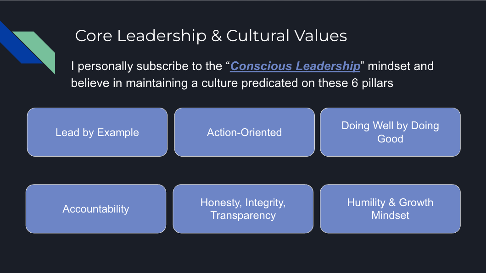
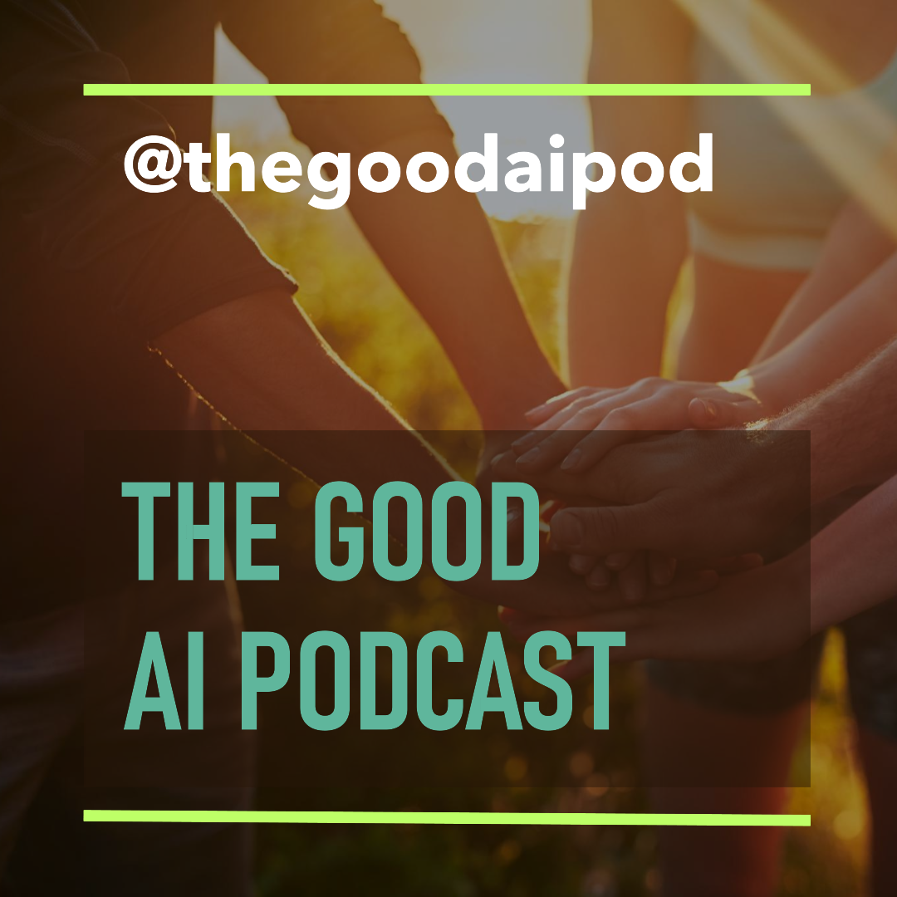

About Me
I'm an entrepreneurial, data-driven engineering leader and builder looking to Do Well by Doing Good. I live by a simple tenet embodied by the quote on my homepage: create more than I consume.
I love to create, whether that is code, patents, papers, articles, books, music, videos, pictures... you name it! Work-wise I spend my time building teams to leverage ML for mission-critical business applications. For fun, I write and build side projects. I keep myself calm and collected through the noise by running marathons and playing the piano.
Leadership
"The most important thing is to try and inspire people so that they can be great at whatever they want to do." - Kobe Bryant
Leading others is a gift but requires clear vision, discipline and empathy. I have led my own startup including engineering, marketing and sales and have since been leading teams of data scientists, machine learning engineers, software engineers and managers.
Leaders are only as good as their teams and the best teams are diverse, inclusive and have a shared sense of purpose. I strongly believe leaders must have clear cultural tenets they live by and share widely to ensure strong alignment in the teams they lead and to build a shared sense of purpose.
Conscious Leadership Pillars
- Leading by Example
- Action-Orientedness
- Doing Well by Doing Good
- Accountability
- Honesty, Integrity and Transparency
- Humility and Growth Mindset

Technical Leadership Focus
- Technical Excellence & System Architecture
- Excellent Design Documentation
- Technical Coaching & Mentorship
- Cross-functional Communication
- Career Growth & Development
- Recruiting & Team Building
- Project Management
A great technical leader must balance the needs of the business with the needs of the team through clear, concise and empathetic communication with the team, leadership and cross-functional orgs as well as data-driven decision-making and performance evaluation based on clear and quantitative business outcomes.
ML Leadership
Given my background is in Machine Learning, I would be remiss if I didn't mention that ML leadership is a bit more complex (see Software 2.0). Given the probabilistic nature of ML products, a technical leader must:
- Manage Cross-functional Expectations
- Educate Customers and Cross-functional Leaders
- Accelerate Research to Production
Building probabilistic products is always more difficult than deterministic ones. As an ML leader today, I aim to train the next group of ML Leaders.
Work History
I have over 10 years of experience building ML-powered software teams with a deep expertise in applying Computer Vision, NLP and LLM models to customer needs and R&D initiatives.
Education
- Stanford: MS EE (AI focus), MS MS&E
- Berkeley: BS EECS, BS MatSci, MS MatSci
Core Skills
Machine Learning & Engineering
Technical Roadmap Development, MLOps, ML Infrastructure, Computer Vision, LLMs, NLP, Architecture Design, Algorithm Design, End-to-end Application Development
Leadership
Strategic Planning & Execution, Project Management, Prioritization, Staffing, Cross-Functional Collaboration, Coaching & Mentorship, Change Management
Software
Python, PyTorch, TensorFlow, Jupyter, Sagemaker, AWS, JavaScript
Experience
Associate Director, Machine Learning
PathAI Jan 2022 - Present
PathAI offers AI-powered research tools and services for pathology to biopharma clients to facilitate drug development and translational research using CV and other techniques.
- Lead 8-person ML product team building Multiple Instance Learning CV models for molecular biomarker prediction
- Managed 12 MLEs, coached 15+ ML members through career growth
- Lead cross-functional research of 15+ ML engineers to improve generalization of pathology CV models generating >$5M in new revenue
- Lead cross-business unit research team on tissue segmentation and cell classification foundation models
Director of ML Solutions
One Concern Jan 2019 - Jan 2022
One Concern offers AI-powered natural disaster damage assessments to governments, financial firms and enterprises to help build resilience.
- Developed new technical analytical organization from scratch
- Led technical diligence and PoC implementation to secure $100M investment from SOMPO
- Hired ~20 data scientists, engineers, and technical subject matter experts
- Initiated COVID-19 modeling effort: COVID Calculator
CEO & Co-founder
Datmo (acq. One Concern) Oct 2015 - Jan 2019
Datmo was an MLOps platform and AI consulting company to help data scientists deploy and manage machine learning models in production.
- Raised seed round, built multiple ML-powered products, secured multiple customers and facilitated acquisition
- Developed novel CNN architecture & NER + ASR combined algorithm
- Built MLOps platform for CV, NLP, and numerical ML algorithms
Additional Experience
- MLOps + ML/AI Consulting @ Lotus AI, Inc. (2019 - Present)
- Fellow @ Second Time Founders (2020 - Present)
- Entrepreneurial Leaders Fellowship @ Stanford & Threshold Ventures (2014-2015)
- Teaching Assistant @ Stanford - Machine Learning (CS 229) (2013-2015)
Research & Patents
I believe first in building products people want and pay for. In doing that, I've been fortunate to develop inventions, patents and to publish papers along the way.
Selected Papers
Patents
The Good AI Podcast

I interview the founders and investors building companies that aim to be profitable with a purpose. These companies span multiple industries from Finance, Healthcare, Energy, Climate and many more.
Subscribe on your favorite podcast app or sign up for our Substack for summaries of our conversations!
Writing
Writing is my favorite medium. Written communication is the clearest form of communication - from daily journals, to design documents, articles about Machine Learning, Good AI and Building ML Systems, you can find me sharing on multiple platforms.
Currently writing: "Machine Learning in the Real World" - a book to be published in 2025.
Music
I love making music. I play the piano, guitar, ukulele and often remix my own songs. From classical to Bollywood, Pop and more, I enjoy bringing together all genres of music.
I'm also a fan of Bollywood dance - I've heard you can find videos online if you look hard enough!
Running
I have completed over 8 marathons and over 15 other shorter races (5k, half, etc). I qualified (sub-3 hour marathon time) and ran the Boston Marathon in 2020 and 2021 and felt great the whole way thanks to the amazing crowd.
Running is a meditative experience and allows me to do my best work. Enduring through the pain of a marathon, much like my startup journey, has taught me that if you put your mind to something you can overcome it. I bring this same mentality to every endeavor.
Let's Chat!
If you are interested in collaborating, reaching out about new opportunities or are looking for AI / ML consulting, please share a short message and your contact info below. I'll get back within 48 hours.